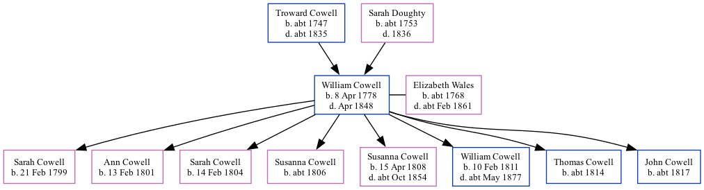

William Castle Cowell 1778 - 1848 [ Home ] | [ Calendar ] | [ Surnames Index ] | [ Family History ]The 2nd of 7 children of Troward Cowell and Sarah Doughty William Cowell , the four times great-uncle of Nigel Horne , was born in Margate, Kent, England on 8 Apr 17781,2 , was baptised there at St John the Baptist Church on 19 Apr 1778 and married Elizabeth Wales (with whom he had 8 children: Sarah , Ann , Sarah Fowler , Susanna , Susanna Eleanor , William Castle , Thomas Castle and John ) in St Peters, Thanet, Kent, England on 18 Jul 17984 . On 6 Jun 1841, he lived at George Hill, St Peters in Thanet2 .
He died in Apr 1848 in Thanet3 .
Parents Troward was born c. 1747Sarah was born c. 1753Children Sarah was born on 21 Feb 1799Ann was born on 13 Feb 1801Sarah Fowler was born on 14 Feb 1804Susanna was born c. 1806Susanna Eleanor was born on 15 Apr 1808William Castle was born on 10 Feb 1811Thomas Castle was born c. 1814John was born c. 1817Citations 1841 England Census Online publication - Provo, UT, USA: The Generations Network, Inc., 2006.Original data - Census Returns of England and Wales, 1841. Kew, Surrey, England: The National Archives of the UK (TNA): Public Record Office (PRO), 1841. Data imaged from the National 1841 England, Wales & Scotland Census - Findmypast (was age 66 and the head of the household) England & Wales, FreeBMD Death Index: 1837-1915 Online publication - Provo, UT, USA: The Generations Network, Inc., 2006.Original data - General Register Office. England and Wales Civil Registration Indexes. London, England: General Register Office. © Crown copyright. Published by permission of the Cont England Marriages 1538-1973 - Findmypast Media Canterbury Baptisms - GBPRS/CANT/B/96207933 England & Wales deaths 1837-2007 - BMD/D/1848/2/AZ/000147/061 England, Births & Baptisms 1538-1975 Transcription - R_885508016 England Marriages 1538-1973 Transcription - R_848291510 Kent, Canterbury Archdeaconry marriages 1538-1928 - GBPRS/CANT/M/97132779/1 1841 England, Wales & Scotland Census - GBC/1841/0013965435 Family Tree Map
Generated by ged2site . Last updated on Feb 19, 2025